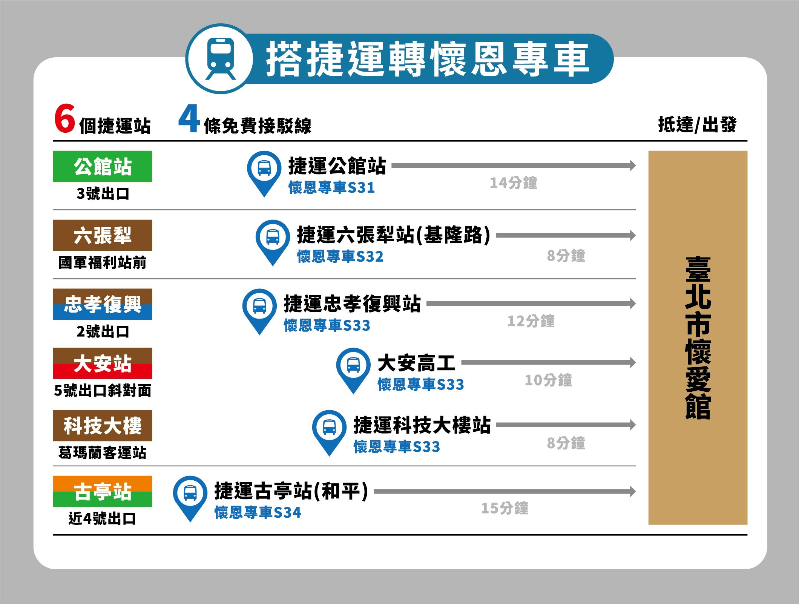
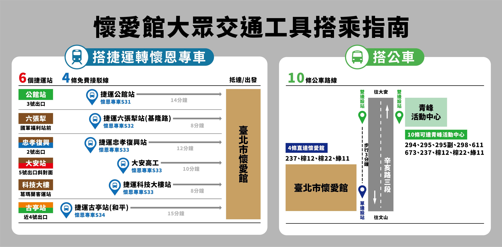
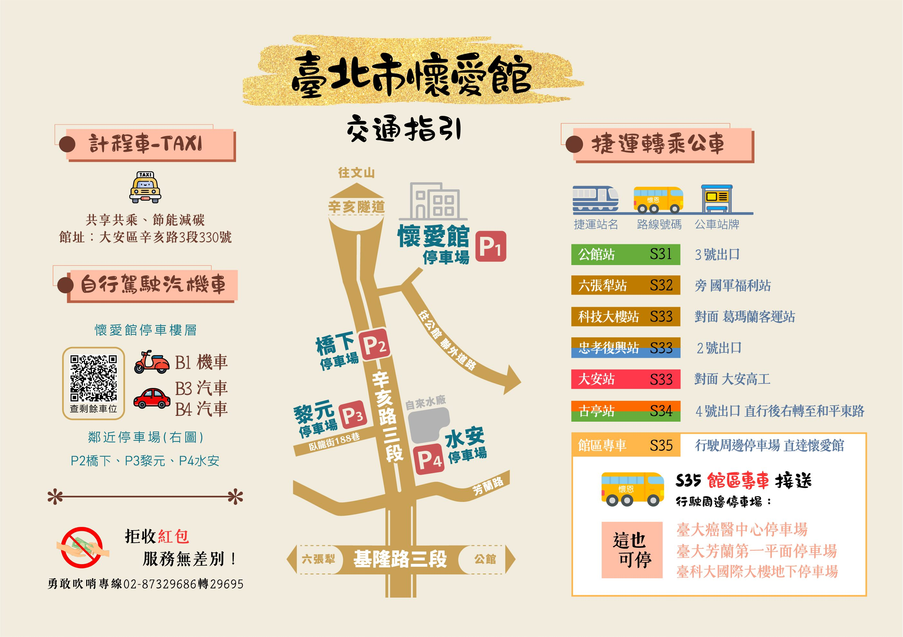
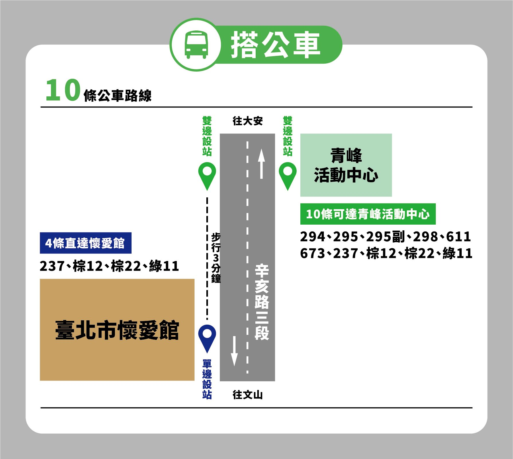
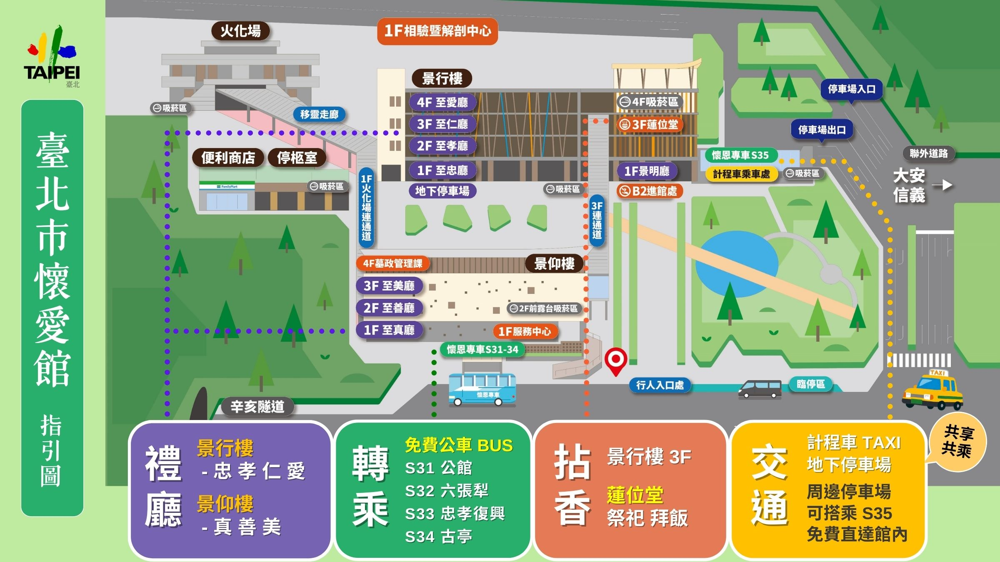

我們敬愛的親人 鄭翔耀先生
於113年11月08日 下午03時42分
在家人的陪伴下 安詳離世 享壽六十七歲
護喪妻 黃子凌
孝男 凱尹 凱元
率 全體孝眷
親視含殮 遵禮成服
豎靈於
板橋 龍華會館 1F
牌位區 [ 9 ] 號
謹擇於
113年11月17日（日）舉行追思告別奠禮
感謝您的關懷與陪伴
給予翔耀先生 最真切的祝福
家人們 銘記在心 衷心感謝
訃告正本

追思緬懷
出殯日期
2024年11月17日（日）
追思奠禮
下午 三 時 家奠禮
下午 三 時 三十分 公奠禮
感謝親友們在這段時間的慰問與關心
您的關懷和鼓勵
陪伴我們度過了這段艱難的時光
敬邀您
與我們一同追思懷念 鄭翔耀先生
並向您獻上最深的敬意
謝謝您！
致贈花籃，送上祝福
選擇致贈花籃樣式，通過LINE與我們聯繫。
加入 LINE 訂購顯示花籃樣式 🌹


分享此頁面


台北市懷愛館（第二殯儀館）
懷恩專車＆停車資訊




